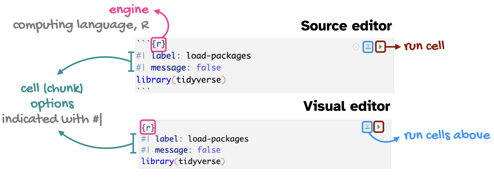

Grammar of data transformation
Lecture 3
Dr. Mine Çetinkaya-Rundel
Duke University
STA 199 - Fall 2024
September 5, 2024
Warm-up
Announcements
AE 01 and AE 02 suggested answers posted on the course website.
Ed Discussion posts:
- Keep them coming!
- Keep them public!
- Feel free to make them anonymous if you prefer.
Monday’s lab:
- Show up on time
- Show up to learn and get support
- Leave with all questions answered and a plan to work on the lab throughout the week
From last time
ae-02-bechdel-dataviz
Go to RStudio, confirm that you’re in the ae project, and open the document ae-02-bechdel-dataviz.qmd.
Recap: Code cells (aka code chunks)
 . . .
Cell
labels are helpful for describing what the code is doing, for jumping between code cells in the editor, and for troubleshootingmessage: falsehides any messages emitted by the code in your rendered document
Application exercise
ae-03-bechdel-data-viz-transform
Go to your ae project in RStudio.
Make sure all of your changes up to this point are committed and pushed, i.e., there’s nothing left in your Git pane.
If you haven’t yet done so, click Pull to get today’s application exercise file:
ae-03-bechdel-data-viz-transform.qmd.Work through the application exercise in class, and render, commit, and push your edits by the end of class.
Data transformation
A quick reminder
- 1
-
Start with the
bechdeldata frame - 2
-
Filter for movies with
roigreater than 400 (gross is more than 400 times budget) - 3
-
Select the columns
title,roi,budget_2013,gross_2013,year, andclean_test
# A tibble: 3 × 6
title roi budget_2013 gross_2013 year clean_test
<chr> <dbl> <dbl> <dbl> <dbl> <chr>
1 Paranormal Activity 671. 505595 339424558 2007 dubious
2 The Blair Witch Proje… 648. 839077 543776715 1999 ok
3 El Mariachi 583. 11622 6778946 1992 nowomen The pipe |>
The pipe operator passes what comes before it into the function that comes after it as the first argument in that function.
Code style tip
- In data transformation pipelines, always use a
- space before
|> - line break after
|> - indent the next line of code
- space before
- In data visualization layers, always use a
- space before
+ - line break after
+ - indent the next line of code
- space before
The pipe, in action
Find movies that pass the Bechdel test and display their titles and ROIs in descending order of ROI.
Start with the bechdel data frame:
The pipe, in action
Find movies that pass the Bechdel test and display their titles and ROIs in descending order of ROI.
Filter for rows where binary is equal to "PASS":
The pipe, in action
Find movies that pass the Bechdel test and display their titles and ROIs in descending order of ROI.
Arrange the rows in descending order of roi:
The pipe, in action
Find movies that pass the Bechdel test and display their titles and ROIs in descending order of ROI.
Select columns title and roi:
Time permitting
Ask another question of the data that can be answered with a data transformation pipeline.